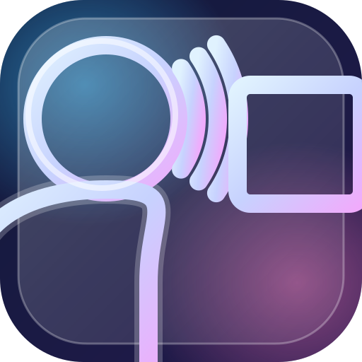
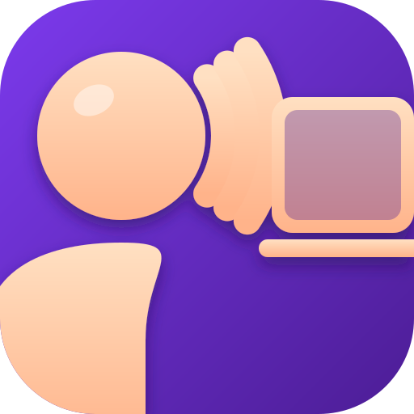
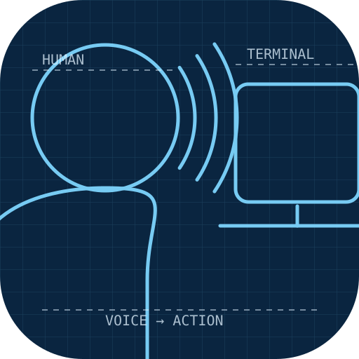
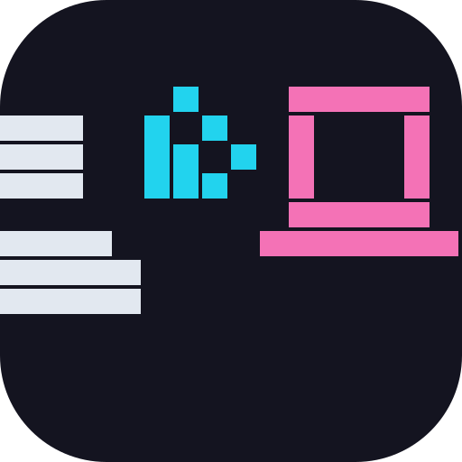
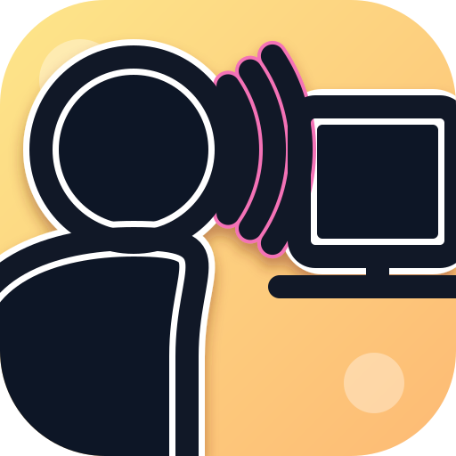
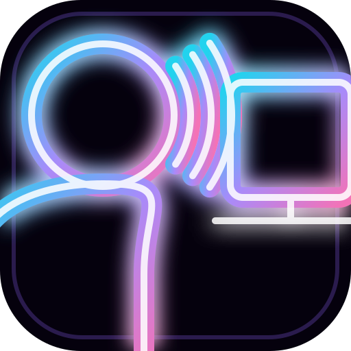

布局锁死：左人 → 中声波 → 右电脑。风格参考 2026 图标趋势（Liquid Glass / Clay / Blueprint / Pixel / Sticker / Neon）。

半透明玻璃面板 + 分层高光，符号像刻在玻璃里（2026 iOS 方向）。

圆润哑光的黏土块，柔和的投影，可爱、可触摸。

深蓝图纸 + 网格 + 细白线 + 标注，像一张工程图。

方块像素风，复古游戏机气质；轮廓用像素近似。

粗白描边 + 投影 + 亮底，像贴在屏幕上的贴纸。

霓虹灯管 + 强辉光，夜里当招牌用。